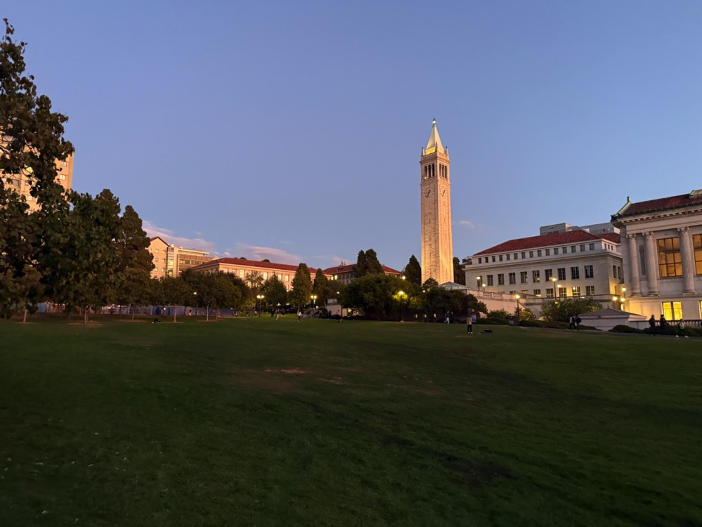

Figure 1: Berkeley Doe Library Image 0.

Figure 2: Berkeley Doe Library Image 1.
In Project 4A, I explored image warping and mosaicing to create panoramas and rectify images. Using homographies, I aligned and blended images to generate seamless panoramas. In Project 4B, I implemented feature detection, descriptor extraction, matching, and homography estimation to automate this process, guided by the paper “Multi-Image Matching using Multi-Scale Oriented Patches” by Brown et al.
A memorable aspect of these projects was observing the impact of movement on image stitching. For instance, stitching images of the Berkeley Doe Library posed challenges due to moving people, whereas static scenes, like my Berkeley Hills sunset, produced more stable results. The project deepened my understanding of computer vision techniques and changed the way I contemplate scenes, encouraging me to think about photographic opportunities.
Figure 1: Berkeley Doe Library Image 0.
Figure 2: Berkeley Doe Library Image 1.

Figure 5: Automatic Stitching Result of Berkeley Doe Library.
Figure 6: Berkeley Hills Image 1.

Figure 7: Berkeley Hills Image 2.

Figure 8: Berkeley Hills Image 3.

Figure 9: Automatic Stitching Result of Berkeley Hills Sunset.
These final results showcase how different scenes and lighting conditions impact the stitching outcome, illustrating the value of controlled and carefully chosen scenes for creating smooth, automatic panoramas.
In this project, I explored techniques for image warping and mosaicing to create panoramas and rectify images. This involved capturing images with overlapping fields of view, computing homographies, warping images, and blending them seamlessly.
You will see at the end that I have also experimented with different lighting scenarion, day and night
To create panoramas, I captured multiple images of scenes with overlapping regions. It's essential to keep the camera's center of projection (COP) fixed while rotating the camera around it. This ensures that the transformations between images are projective, allowing for accurate homography estimation. I took photos of various scenes, ensuring sufficient overlap and consistent exposure settings.
You will see at the end that I have also experimented with different lighting scenarios, both day and night.
Figure 1: Image 1 of SFU University General Hall Area.
Figure 2: Image 2 of SFU University General Hall Area.
Figure 3: Night Image 0 in Burnaby, BC.
Figure 4: Night Image 1 in Burnaby, BC.
Figure 5: Night Image 2 in Burnaby, BC.
Figure 6: Room Image 1.
Figure 7: Room Image 2.
Figure 8: Room Image 3.
To align images, I needed to compute the homography matrix that maps points from one image to corresponding points in another. Given a set of corresponding points \((x, y)\) in the first image and \((x', y')\) in the second image, the homography \(H\) satisfies:
\[ \begin{bmatrix} x' \\ y' \\ 1 \end{bmatrix} = H \begin{bmatrix} x \\ y \\ 1 \end{bmatrix} \]
The homography \(H\) is a \(3 \times 3\) matrix with 8 degrees of freedom (since it's defined up to scale). We can set up a system of equations for each pair of corresponding points:
\[ \begin{cases} x' = \dfrac{h_{11}x + h_{12}y + h_{13}}{h_{31}x + h_{32}y + h_{33}} \\ y' = \dfrac{h_{21}x + h_{22}y + h_{23}}{h_{31}x + h_{32}y + h_{33}} \end{cases} \]
This can be rearranged into a set of linear equations \(A\mathbf{h} = \mathbf{b}\), where \(\mathbf{h}\) is a vector containing the elements of \(H\). With at least four pairs of points, we can solve for \(\mathbf{h}\) using least squares to minimize the reprojection error.
With the homography computed, I warped one image onto the plane of the other. To achieve this, I applied the inverse homography to map pixels from the destination image back to the source image. This inverse warping ensures that every pixel in the output image gets a value from the source image, preventing holes.
I determined the bounding box of the warped image by transforming the corner points and then used interpolation to compute pixel values at non-integer coordinates. This process allowed me to align the images accurately, preparing them for blending.

Figure 1: Original Image 1.

Figure 2: Original Image 2.
Figure 3: Image 1 Warped onto Image 2.

Figure 4: Warped Image 1.
Image rectification involves warping an image so that a selected plane becomes frontal-parallel. I selected images containing planar surfaces like screens or keyboards. By choosing points that define a rectangle on the plane, I mapped these points to a true rectangle in the output image.
One challenge was accurately selecting the corner points, especially in images with perspective distortion. Slight inaccuracies could lead to misalignment in the rectified image. Ensuring that the correspondences were precise was crucial for successful rectification.

Figure 5: Original Image of Computer Screen.
Figure 6: Rectified Image of Computer Screen.
Figure 7: Original Image (Top View).
Figure 8: Rectified Image (Top View).
The third attempt involved rectifying an image of a keyboard. However, this attempt wasn't successful due to challenges in accurately selecting the corner points amidst repetitive patterns and reflections on the keyboard surface. The failure highlights the importance of clear feature points for homography estimation.
Figure 9: Original Image of Keyboard.
Figure 10: Attempted Rectification of Keyboard.
Image blending involves combining two or more images into a seamless panorama. This is done by aligning the images using homographies and then blending them smoothly to reduce visible seams between the overlapping regions.
The blending process uses masks to define the regions of overlap between two images. The goal is to gradually transition between the two images using an alpha mask, which controls how much of each image contributes to the final result. The mask typically transitions smoothly from 1 (fully image 1) to 0 (fully image 2).
Additionally, edges in the overlapping regions are handled carefully to avoid visible artifacts. Edge detection can help to identify significant transitions between regions, and these edges are softened during the blending process to make the final panorama look natural.
In the blending process, we use a mask that defines how the two images are combined. The mask transitions between 1 (image 1) and 0 (image 2) across the overlapping region. By applying this mask, we can ensure a smooth transition, where both images contribute to the blended region in proportion to their mask values.
Edge detection helps in identifying the boundaries in the overlapping region where there is a significant intensity change. This allows us to adjust the blending at the edges, ensuring that the seams between the images are less noticeable. The detected edges are used to guide the blending process, where we perform more smoothing along the edges to avoid visible sharp transitions.
Figure 1: The Mask used for Blending.
Figure 2: Detected Edges in the Overlapping Region.
The mask defines the transition region, and the edge map guides the blending around the seams. The mask ensures that the images blend smoothly across the transition region, while the edge map helps in softening the edges in this region. The final blended image is a combination of the two images with the contribution of each image based on the mask.
In the example of blending two images from the SFU University general room, the mask smoothly transitions between the two images in the overlapping region, and edge detection helps to soften the transitions near the boundary.
Figure 11: SFU Image 1.
Figure 12: SFU Image 2.

Figure 13: Blended Panorama of SFU.
Figure 14: Night Image 0.
Figure 15: Night Image 1.
Figure 16: Night Image 2.
Figure 17: Blended Night Panorama.
Figure 18: Room Image 1.
Figure 19: Room Image 2.
Figure 20: Room Image 3.
Figure 21: Blended Panorama of Room.
This project deepened my understanding of homographies and image warping. By successfully aligning and blending multiple images, I was able to create seamless panoramas and rectify images. The challenges in point selection and blending techniques highlighted the importance of precision and the effectiveness of computational methods in image processing.
In this project, I developed a system for automatically stitching images into a mosaic by implementing feature detection, description, matching, and homography estimation techniques. A key aspect of this project was to read and implement concepts from the research paper “Multi-Image Matching using Multi-Scale Oriented Patches” by Brown et al., with several simplifications.
One of the coolest things I learned from this project was how much I started to pay attention to my surroundings and consider photographic opportunities. I noticed a change in the way I think and contemplate scenes, as I began to pay attention to where I go and to take pictures that could be stitched together. Another interesting observation was the impact of moving objects on automatic feature matching. For instance, when I took pictures of the Berkeley Doe Library with people walking by, it was challenging to get the stitch working correctly due to the moving subjects.
Figure 1: Berkeley Doe Library Image 0.
Figure 2: Berkeley Doe Library Image 1.

Figure 3: Berkeley Doe Library Image 2.

Figure 4: Berkeley Doe Library Image 3.
Figure 5: Automatic Stitching Result of Berkeley Doe Library.
Figure 6: Berkeley Hills Image 1.
Figure 7: Berkeley Hills Image 2.
Figure 8: Berkeley Hills Image 3.
Figure 9: Automatic Stitching Result of Berkeley Hills Sunset.
Due to the presence of moving people in some images, stitching all of them was challenging. Therefore, I focused on stitching the images without significant movement to achieve better results.
The first step was to detect corner features in the images using the Harris Interest Point Detector. Harris corners are points in an image where the surrounding pixels have significant changes in intensity in all directions, making them suitable for tracking and matching.
The Harris corner detector computes the gradient of the image and analyzes the eigenvalues of the second-moment matrix to find regions with significant variations. These points are overlaid on the image as shown below.
After detecting corners, I implemented Adaptive Non-Maximal Suppression (ANMS) to select a subset of keypoints that are both strong and well-distributed across the image. This process helps in reducing the computational load and improving the matching performance.
The ANMS algorithm works by computing a suppression radius \( r_i \) for each corner point, defined as the minimum distance to a stronger corner, scaled by a robustness constant \( c_{\text{robust}} \). The suppression radius is calculated as:
\[ r_i = \min_{j} \left( \| x_i - x_j \| \quad \text{such that} \quad f_j > f_i \cdot c_{\text{robust}} \right) \]
Here, \( f_i \) is the corner strength at point \( i \), and \( x_i \) is the coordinate of point \( i \). The robustness constant \( c_{\text{robust}} \) controls the suppression level. I used \( c_{\text{robust}} = 0.9 \) and selected the top 500 points with the largest suppression radii.
The resulting keypoints after applying ANMS are shown below.
Figure 10: Detected Harris Corners on SFU Image.
Figure 11: ANMS Filtered Corners on SFU Image.
For each keypoint, I extracted a feature descriptor to characterize the local image region. I sampled a 40x40 pixel window around each keypoint and downsampled it to an 8x8 patch by taking a step size of 5 pixels. This process captures the essential structure while reducing the dimensionality.
The descriptors were bias and gain normalized to account for lighting variations. I ignored rotation invariance for simplicity. An example of a feature descriptor is shown below.
Figure 12: Feature Descriptor for Keypoint 15 on SFU Image.
With the feature descriptors extracted, I proceeded to match them between pairs of images. I used the approach described by Lowe, where matches are determined based on the ratio of the distances to the first and second nearest neighbors.
Specifically, for each descriptor in the first image, I found its two nearest neighbors in the second image. If the ratio of the distances \( \frac{d_1}{d_2} \) was below a threshold (I used 0.8), the match was considered reliable. This helps in filtering out ambiguous matches.
The matched features before and after applying the threshold are visualized below.
Figure 13: Feature Matches Before Thresholding.
Figure 14: Feature Matches After Applying Threshold (Pre-RANSAC).
To robustly estimate the homography between the images, I used the RANSAC (Random Sample Consensus) algorithm. RANSAC iteratively selects random subsets of matches to compute candidate homographies and then evaluates them based on the number of inliers—matches that fit the model within a certain error threshold.
The algorithm proceeds as follows:
The final homography is computed using all inliers from the best model. This process helps to eliminate outliers and results in a more accurate alignment.
The matches after applying RANSAC are shown below.

Figure 15: Feature Matches After RANSAC.
After computing the homographies automatically, I proceeded to stitch the images into panoramas. Below are comparisons between manual stitching (from Project 4A) and automatic stitching for each of the mosaics.
it is also important to mentioned that I did some modification in my blending process for part 4B
Figure 16: Manual Stitching of SFU Images.

Figure 17: Automatic Stitching of SFU Images.
Figure 18: Manual Stitching of Night Images.
Figure 19: Automatic Stitching of Night Images.

Figure 20: Manual Stitching of Room Images.

Figure 21: Automatic Stitching of Room Images.
Here are my favorite final results from the Berkeley Doe Library and the Berkeley Hills.
Figure 22: Automatic Stitching of Berkeley Doe Library.
Figure 23: Automatic Stitching of Berkeley Hills Sunset.
Through this project, I gained a deeper understanding of feature detection, description, and matching techniques, as well as robust homography estimation using RANSAC. Implementing these algorithms allowed me to automate the image stitching process and appreciate the challenges involved, such as dealing with moving objects and varying lighting conditions.
The coolest thing I learned was how the combination of computer vision techniques can produce impressive results, enabling us to create panoramas automatically. Additionally, this project made me more observant of my surroundings, considering how scenes could be captured and stitched together.